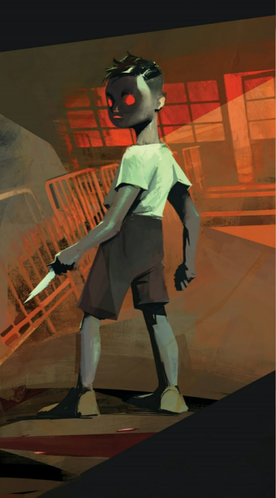
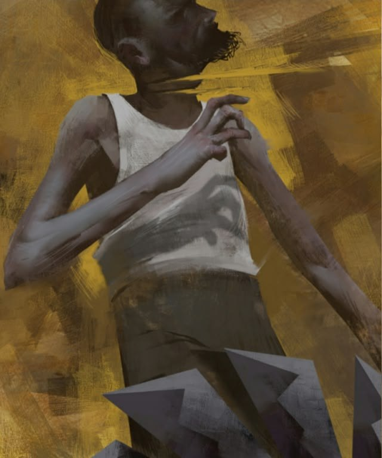
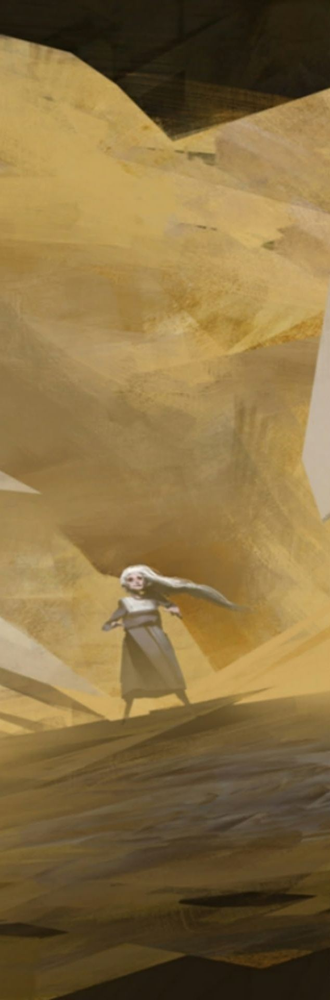
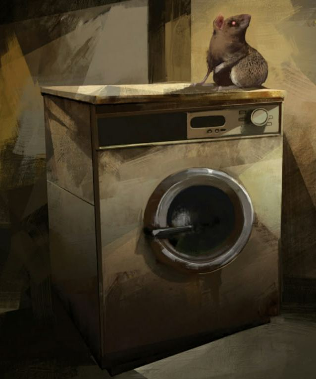
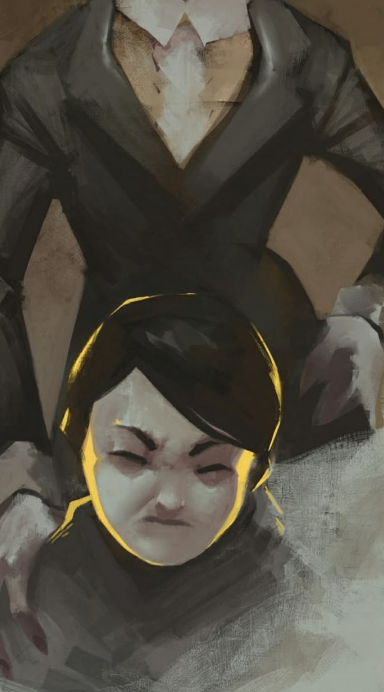

Escribo historias, creo música y exploro imágenes en movimiento. Distintos lenguajes para construir un universo propio.
Una colección de relatos donde lo cotidiano se abre a lo extraño, lo íntimo, lo absurdo y lo inquietante. A través de personajes y situaciones que tensionan la realidad, el libro explora distintas formas de lo inusual: aquello que sorprende, descoloca o revela una grieta en la experiencia ordinaria.
Las ilustraciones de Boli Nolasco amplían este universo narrativo con una fuerza visual que acompaña, interpreta y prolonga el clima de los cuentos.
Textos · Omar Durán Guerra
Ilustraciones · Boli Nolasco
Editorial Gato Blanco · 2021


Ilustraciones originales de Boli Nolasco para Quince cuentos inusuales.
Pieza audiovisual de presentación del libro. El video se mostrará aquí cuando esté disponible mediante un enlace público o un archivo compatible.


